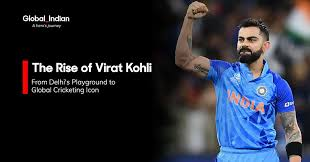
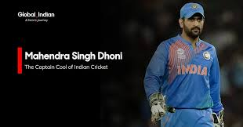

Virat Kohli
-
Test
As Test captain, Kohli turned India into a dominant force by winning an away series in Sri Lanka, beating South Africa at home, reclaiming the No. 1 Test ranking and holding it for five consecutive years. In T20Is, he created history by winning back-to-back Player of the Tournament awards in the 2014 and 2016 ICC Men’s T20 World Cups. He delivered one of the greatest away Test batting performances in 2018, scoring 593 runs in England, before leading India to a historic first-ever Test series victory in Australia later that year.
-
His 2023 Peak
Kohli reached another peak in the 2023 ODI World Cup, scoring 3 centuries, breaking Sachin Tendulkar’s record with his 50th ODI hundred, and becoming the player with the most centuries in ODI history. He also set the record for most runs in a single World C up with 765 runs and won the Player of the Tournament award and leading India to the final.
-
Image od Kohli

MS Dhoni
-
Captaincy
He is the only captain in cricket history to win all three major ICC white-ball trophies: the 2007 ICC World Twenty20, the 2011 ICC Cricket World Cup, and the 2013 ICC Champions Trophy.
-
Awards
His contributions were recognized with India's highest sporting honour, the Major Dhyan Chand Khel Ratna Award (2008), the Padma Shri (2009), and the Padma Bhushan (2018). In June 2025, he was inducted into the ICC Cricket Hall of Fame.
-
Image Of Dhoni
